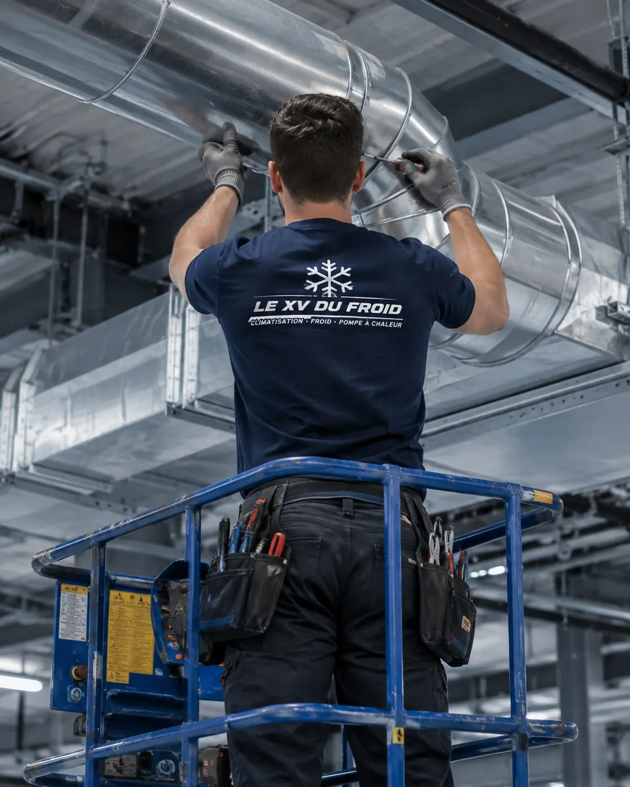
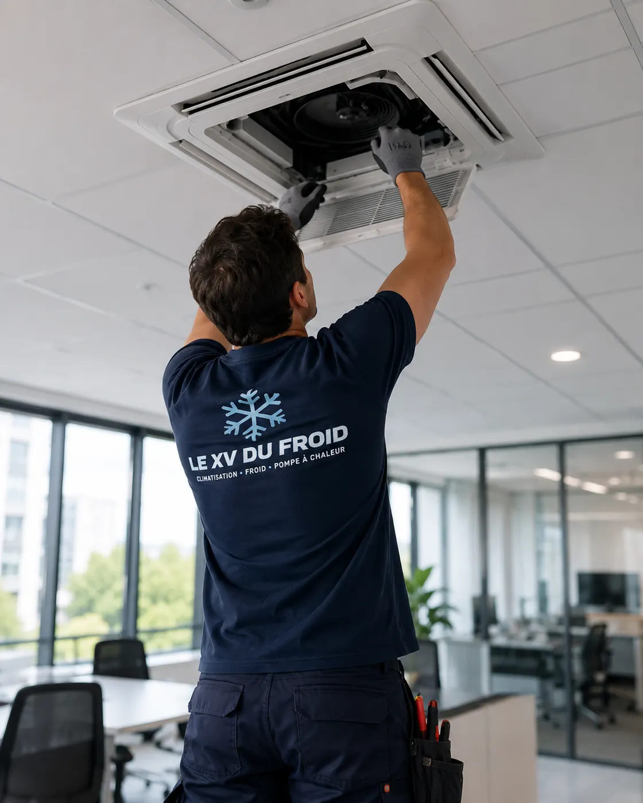

Limay · 78520 · commerce alimentaire
Urgence climatisation Limay : la clim du commerce lâche, avec des denrées en vitrine.
Une boulangerie dont le fournil s’étouffe, un snack où la salle devient irrespirable, un traiteur dont la vitrine souffre de la chaleur : une clim en panne dans un commerce alimentaire pose d’autres problèmes qu’à la maison. Voici comment nous raisonnons, à Limay.
- Protéger d’abord les denrées
- Distinguer clim et froid commercial
- Nous faisons au plus vite

Commerce alimentaire
Deux sujets à ne pas confondre.
Dans un commerce alimentaire, il y a deux familles d’équipements : la climatisation de la salle ou du laboratoire, qui rafraîchit les personnes, et le froid commercial, qui garde les denrées : vitrines réfrigérées, chambres froides, armoires.
Nous intervenons sur la première. Le froid commercial relève d’un frigoriste spécialisé. Nous vous le disons au téléphone pour ne pas vous faire perdre de temps.
Cela dit, une salle trop chaude abîme aussi les produits et l’équipe. Pour une urgence climatisation Limay dans un commerce, voici ce qu’on conseille de faire en premier.
Premiers gestes
Ce qui protège les denrées pendant que la clim est en panne
Fermez les stores côté soleil, éloignez les produits sensibles des vitrines exposées, ouvrez les portes arrière pour créer un courant d’air quand la température extérieure le permet. Ne laissez pas les produits frais sur le comptoir.
Dans un laboratoire où l’on travaille la pâte ou le beurre, la température compte plus que le confort : si le plan de travail chauffe, mieux vaut interrompre la fabrication que de voir les produits tourner.
Respectez les règles d’hygiène qui s’appliquent à votre activité. En cas de doute sur une denrée, c’est à vous, ou à votre service d’hygiène, de trancher.
Une clim en panne n’autorise pas à prendre un risque sanitaire. Dans le doute, on retire le produit.
Ce qui est de notre ressort
Clim de salle et de laboratoire
Nous dépannons les splits muraux, les cassettes au plafond, les gainables et les armoires de climatisation, dans une salle de vente, un laboratoire ou des bureaux de commerce.
Les vitrines réfrigérées, chambres froides, groupes de froid commercial et machines à glace sont du ressort d’un frigoriste. Nous ne les prenons pas en charge et nous préférons vous orienter vers le bon interlocuteur dès l’appel.
Si vous n’êtes pas sûr de la nature de votre équipement, décrivez-le : une photo de l’étiquette suffit à trancher.

Quel type d’appareil dans un commerce
Un commerce de bouche utilise souvent une cassette au plafond pour la salle, un split mural dans le fournil et parfois un gainable qui dessert l’arrière-boutique.
Chaque type a ses pannes habituelles : fuites d’eau sur les cassettes, filtres saturés de farine ou de graisse, condenseurs encrassés. Nous les connaissons et nous venons avec la bonne pièce quand c’est possible.
- Cassettes et gainables
- Filtres saturés de graisse ou de farine
- Pièces courantes à bord
Sur place
Comment se passe l’intervention dans un commerce ouvert
L’objectif est de réparer sans gêner la clientèle plus que nécessaire.
- Accès : nous passons par l’arrière si c’est possible et nous protégeons le sol.
- Bruit et poussière : nous évitons d’ouvrir une cassette en plein coup de feu.
- Communication : nous disons au commerçant ce qui est en cause avant de démonter.
- Devis : remis par écrit avant toute réparation payante.
- Compte rendu : daté, avec ce qui a été fait et ce qui reste à surveiller.
Rapidité
Ce qu’on peut dire honnêtement
Pour un commerce, nous faisons au plus vite. Appelez le matin, avant l’ouverture si possible, pour un créneau rapide. Nous ne promettons pas d’heure précise.
Pour un depannage climatisation urgence Limay, précisez dès l’appel qu’il s’agit d’un commerce alimentaire : cela nous aide à ordonner les passages.
Questions
Clim en panne dans un commerce alimentaire à Limay
Dépannez-vous les vitrines réfrigérées ?
Non. Ce sont des équipements de froid commercial. Nous intervenons sur la climatisation de la salle ou du laboratoire et nous vous orientons vers un frigoriste pour le reste.
Ma clim de fournil est en panne, que faire des pâtes ?
Surveillez leur température et leur pousse. Si le local devient trop chaud, mieux vaut interrompre la fabrication que de perdre toute la série.
Puis-je rester ouvert sans clim ?
Cela dépend de la chaleur et de votre activité. Les règles d’hygiène s’appliquent toujours. En cas de doute, demandez conseil à votre service d’hygiène.
Intervenez-vous avant l’ouverture du commerce ?
Nous cherchons le créneau qui vous gêne le moins, tôt le matin si possible. Nous ne pouvons pas promettre d’horaire à l’avance.
Faut-il fermer pendant le dépannage ?
Pas toujours. Souvent, nous pouvons travailler à l’arrière ou en dehors des heures de pointe, en protégeant le sol et le matériel.
Un contrat d’entretien aurait-il évité la panne ?
Peut-être, si elle vient d’un filtre saturé ou d’un bac encrassé. Nous ne le proposons que si votre installation s’y prête.
Dans votre ville
Les autres services à Limay
Un besoin différent, une page différente : dépannage, entretien, installation ou urgence.
Autour de chez vous
Urgence de climatisation dans les villes voisines
Si vous êtes à la limite de deux communes, lisez aussi la page d’à côté.
- Urgence climatisation Les Mureaux : fuite de gaz frigorigène, les consignes
- Urgence climatisation Mantes-la-Jolie : la clim s’arrête et ne redémarre plus
- Urgence climatisation Poissy : le disjoncteur saute à chaque démarrage
- Urgence climatisation Rambouillet : bruit violent ou vibration soudaine, que faire
- Urgence climatisation Conflans-Sainte-Honorine : groupe extérieur qui penche ou se décroche
- Urgence climatisation Plaisir : bébé, personne âgée, chaleur et sécurité
- Urgence climatisation Maisons-Laffitte : ce qui est urgent et ce qui peut attendre un jour
- Urgence climatisation Trappes : après un dégât des eaux, qui appeler en premier
- Urgence climatisation Élancourt : que dire au téléphone pour gagner du temps
À côté
D’autres besoins dans les communes voisines
Chaque ville a ses pages.
Nos services
Aller plus loin sur la climatisation
Les pages du site qui complètent celle-ci : services, guides pratiques et devis.
- Dépannage climatisation en Île-de-France
- Installation de climatisation : split, gainable, monobloc
- Entretien de climatisation et de clim réversible
- Demander un devis climatisation gratuit
- Toutes nos zones d’intervention
- Quelle puissance de climatisation choisir ?
- Ma climatisation ne refroidit plus : que faire ?
Où on intervient
Limay et le Mantois
Le centre de Limay, les commerces des axes principaux, les zones d’activité, ainsi que Mantes-la-Jolie, Mantes-la-Ville, Follainville-Dennemont, Issou et Gargenville.
Demander une intervention à LimayÀ lire aussi
Autour de Limay
Pages voisines : urgence Mantes-la-Jolie, urgence Les Mureaux.
Transparence
Un devis clair avant toute intervention.
Vous savez ce qui est prévu, pourquoi c’est nécessaire et à quel tarif avant que le technicien commence. Puis contrôles et essais avant son départ.